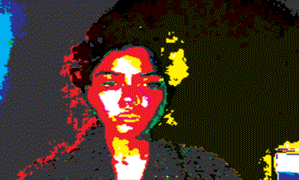

Biography:

Ezgi Ateş (b. Istanbul, 1998) is an interdisciplinary artist. Ateş moved to Chicago, IL in order to attend the School of the Art Institute of Chicago for a BFA degree. Practicing painting and drawing, printmaking, digital sound-making, game development, and experimental coding, Ateş has a wide range of interests that comes from her constant need of learning. Going into her final semester, Ateş has devoted herself to exploring experimental coding and video game development. Using the documentation aspect of art, in her visuals compositions Ateş depicts moments that are irritating to watch for her, this may vary from political subjects to personal.